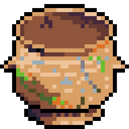

Introduction to the Quarter
This study was prepared for the first lesson of the Sabbath school quarter.
Icebreaker Question: Why are there four gospels?
- Nobody has all the answers, you need multiple witnesses
- God reaches people where they are, different gospels have different authors that resonate with each other.
- There’s harmony in the gospels. Have you ever had to ask yourself, “Ok, I have 4 gospels, which one is true and which three are false?”
- There are actually more than 4 gospels. Luke 1:1-4 says “Inasmuch as many have undertaken to compile a narrative of the things that have been accomplished among us, just as those who from the beginning were eyewitnesses and ministers of the word have delivered them to us, it seemed good to me also, having followed all things closely for some time past, to write an orderly account for you, most excellent Theophilus, that you may have certainty concerning the things you have been taught.”
General observations about John’s Gospel
John uses simple Greek. It is evident that he had been taught how to write. Other bits of evidence suggest that John’s family was well to do (Zebedee had hired workers), so John likely received a good education.
John was likely written after Revelation, after he moved to Ephesus
Purpose of the Book
John has a story that he uses to motivate the purpose of the book.
Joh 20:24-29 Now Thomas, one of the twelve, called the Twin, was not with them when Jesus came. [25] So the other disciples told him, “We have seen the Lord.” But he said to them, “Unless I see in his hands the mark of the nails, and place my finger into the mark of the nails, and place my hand into his side, I will never believe.” [26] Eight days later, his disciples were inside again, and Thomas was with them. Although the doors were locked, Jesus came and stood among them and said, “Peace be with you.” [27] Then he said to Thomas, “Put your finger here, and see my hands; and put out your hand, and place it in my side. Do not disbelieve, but believe.” [28] Thomas answered him, “My Lord and my God!” [29] Jesus said to him, “Have you believed because you have seen me? Blessed are those who have not seen and yet have believed.”
John is writing to an audience that never had met Jesus (John is likely the last of his generation of eyewitnesses). The question that John wants to answer for his audience is “how do you have a relationship with Someone you have never seen?”.
Joh 20:30-31 Now Jesus did many other signs in the presence of the disciples, which are not written in this book; but these are written so that you may believe that Jesus is the Christ, the Son of God, and that by believing you may have life in his name.
You will not find such a clear statement of the purpose of the book in Matthew, Mark, Luke, and John; you have to tease it out.
Introduction
Joh 20:30-31 And many other signs truly did Jesus in the presence of his disciples, which are not written in this book: But these are written, that ye might believe that Jesus is the Christ, the Son of God; and that believing ye might have life through his name.
The miracles that Jesus did in John are all remote miracles. Compare to Luke 4:40
Luke 4:40 Now when the sun was setting, all those who had any who were sick with various diseases brought them to him, and he laid his hands on every one of them and healed them.
1. Water into Wine (John 2:1-11)

Isa 25:6 “On this mountain the LORD of hosts will make for all peoples a feast of rich food, a feast of well-aged wine, of rich food full of marrow, of aged wine well refined.”
2. Healing the Nobleman’s Son (John 4:46-54)
The man comes to Jesus from Capernaum which is 16 miles away
Psa 107:19-20 Then they cried to the LORD in their trouble, and he delivered them from their distress. He sent out his word and healed them, and delivered them from their destruction.
3. Healing the Paralytic at Bethesda (John 5:1-15)
Joh 5:8 Jesus said to him, “Get up, take up your bed, and walk.”
Isa 35:4-6 Say to those who have an anxious heart, “Be strong; fear not! Behold, your God will come with vengeance, with the recompense of God. He will come and save you.” Then the eyes of the blind shall be opened, and the ears of the deaf unstopped; then shall the lame man leap like a deer, and the tongue of the mute sing for joy.
4. Feeding the 5,000 (John 6:1-14)
Joh 6:5-7 [5] Lifting up his eyes, then, and seeing that a large crowd was coming toward him, Jesus said to Philip, “Where are we to buy bread, so that these people may eat?” [6] He said this to test him, for he himself knew what he would do. [7] Philip answered him, “Two hundred denarii worth of bread would not be enough for each of them to get a little.”
Psa 78:22-25 because they did not believe in God and did not trust his saving power. Yet he commanded the skies above and opened the doors of heaven, and he rained down on them manna to eat and gave them the grain of heaven. Man ate of the bread of the angels; he sent them food in abundance.
5. Walking on Water (John 6:16-21)
Joh 6:19-21 [19] When they had rowed about three or four miles, they saw Jesus walking on the sea and coming near the boat, and they were frightened. [20] But he said to them, “It is I; do not be afraid.” [21] Then they were glad to take him into the boat, and immediately the boat was at the land to which they were going.
Psa 107:28-30 Then they cry unto the LORD in their trouble, and he bringeth them out of their distresses. He maketh the storm a calm, so that the waves thereof are still. Then are they glad because they be quiet; so he bringeth them unto their desired haven.
Job 9:8 [God] alone stretched out the heavens and trampled the waves of the sea;
6. Healing the Man Born Blind (John 9:1-12)
Joh 9:7 and said to him, “Go, wash in the pool of Siloam” (which means Sent). So he went and washed and came back seeing.
Jesus tells the man to wash in the pool of Siloam, which is down a series of outdoor steps about 1200 yards away.
Isa 29:18 And in that day shall the deaf hear the words of the book, and the eyes of the blind shall see out of obscurity, and out of darkness.
Isa 42:7 To open the blind eyes, to bring out the prisoners from the prison, and them that sit in darkness out of the prison house.
(c.f., Isa 35:5, Psa 146:8, Joh 9:32)
7. Raising Lazarus from the Dead (John 11:1-44)
Joh 11:43 When he had said these things, he cried out with a loud voice, “Lazarus, come out.”
Eze 37:13 And ye shall know that I am the LORD, when I have opened your graves, O my people, and brought you up out of your graves,
Conclusion: The Purpose of the Signs
John’s intent in recording these miracles was to provide evidence that Jesus is the Messiah.
- How do these signs deepen our understanding of Jesus as the fulfillment of Old Testament prophecies?
- How can we, as modern believers, allow the truths of these signs to impact our faith and witness?